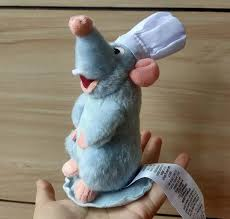

Les rêves des amoureux sont comme le bon vin
Ils donnent de la joie ou bien du chagrin
Affaibli par la faim, je suis malheureux
Volant en chemin tout ce que je peux
Car rien n'est gratuit dans la vie
L'espoir est un plat bien trop vite consommé
À sauter les repas je suis habitué
Un voleur, solitaire et triste à nourrir
À nous, je suis amer, je veux réussir
Car rien n'est gratuit dans la vie
Jamais on ne me dira
Que la course aux étoiles
Ça n'est pas pour moi
Laissez-moi vous émerveiller
Et prendre mon envol
Nous allons en fin nous régaler
La fête va enfin commencer
Et sortez les bouteilles, finis les ennuis
Je dresse la table, de ma nouvelle vie
Je suis heureux à l'idée de ce nouveau destin
Une vie à me cacher et puis libre enfin
Le festin est sur mon chemin
Une vie à me cacher et puis libre enfin
Le festin est sur mon chemin